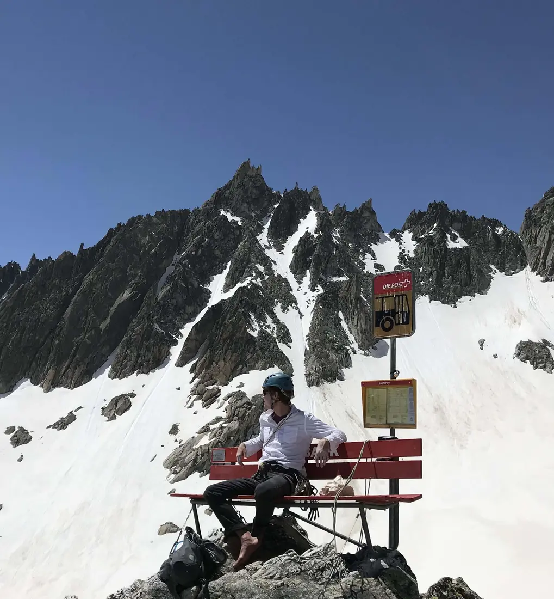

Courses and office hours
Teaching
Current courses and a record of previous teaching.

Fall 2026 courses
Office hours
Office: Administrative Building 6134
In person: TBA
Zoom: TBA
Past teaching
- Spring 2026Math 110 — Critical Thinking; Math 378 — Number Systems; Math 470 — Abstract Algebra
- Fall 2025Math 100 — Mathematical Ideas; Math 470 — Abstract Algebra; Math 520 — Graduate Algebra
- Spring 2025Math 260 — Calculus III
- Fall 2024Math 100 — Mathematical Ideas; Math 110 — Critical Thinking; Math 470 — Abstract Algebra
- Spring 2024Math 378 — Number Systems; Math 470 — Abstract Algebra; Math 522 — Graduate Number Theory
- Fall 2023Math 110 — Critical Thinking; Math 378 — Number Systems
- Spring 2023Math 378 — Number Systems; Math 470 — Abstract Algebra
- Fall 2022Math 110 — Critical Thinking; Math 470 — Abstract Algebra
- Spring 2022Linear Algebra and Number Theory
- Fall 2021Linear Algebra and Number Theory
- Spring 2021Linear Algebra
- Fall 2020Linear Algebra
- Spring 2020Calculus III
- Fall 2019Calculus III
- Summer 2018REU on Monogenic Fields at CU Boulder. Read the resulting paper.
- Spring 2018Abstract Algebra I at Colorado College, co-taught with Beth Malmskog
- Fall 2017Calculus II
- Spring 2017Calculus II
- Summer 2016Precalculus
- Spring 2016Calculus I
- Fall 2015Calculus I